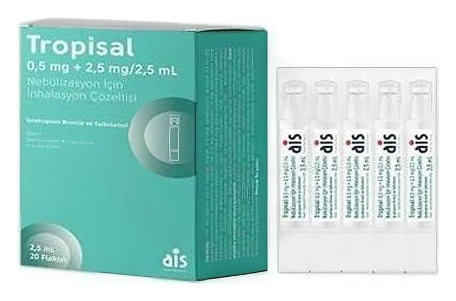

Tropisal 0,5 mg + 2,5 mg/2,5 ml Nebülizasyon İçin İnhalasyon Çözeltisi , 20 Adet

Ne için kullanılır
KT · Bölüm 1Bu ilacı, nebülizatör adı verilen bir aletle kullanacaksınız. Bu alet, ilacınızı solunum yoluyla alabilmeniz için buğu haline çevirir. TROPİSAL iki farklı ilaç içerir: • İpratropium bromür • Salbutamol sülfat
Her iki ilaç da “bronkodilatörler” yani “bronş açıcılar” adı verilen bir ilaç grubunda yer alır. Bu ilaçlar “kronik obstrüktif akciğer hastalığı” ya da kısaca KOAH denilen bir hastalıkta daha kolay nefes almayı sağlamak için kullanılır. Bu ilaçlar, solunum yolunuzu açarak etki gösterir.
TROPİSAL İnhalasyon Çözeltisi, her biri bir defada kullanılmak üzere hazırlanmış karton kutu içerisinde 3 katmanlı (PET/ Alu / LDPE) folyo ile saşelenmiş şekilde, 20 adet tek dozluk, şeffaf, 2.5 mL’lik, düşük yoğunluklu polietilen (LDPE) flakon içeren ambalajlar halinde piyasaya sunulmaktadır.